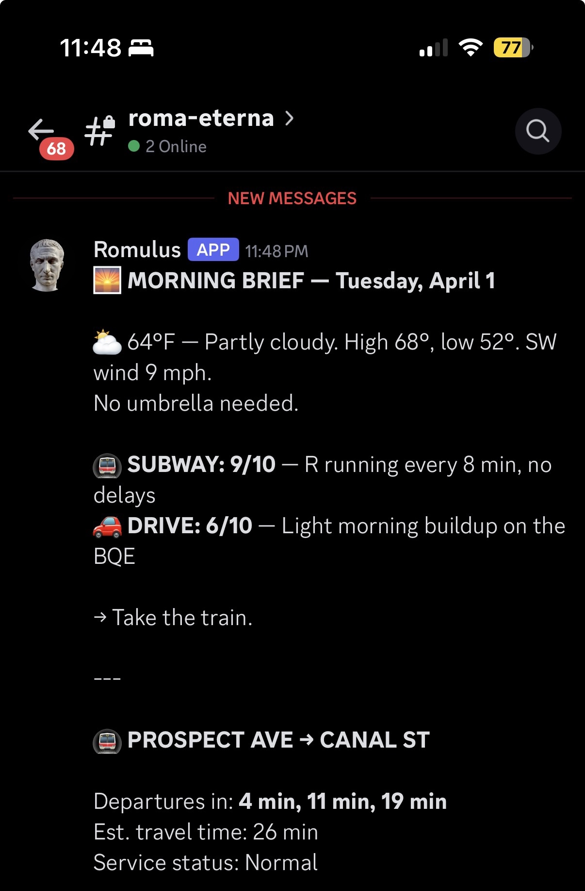
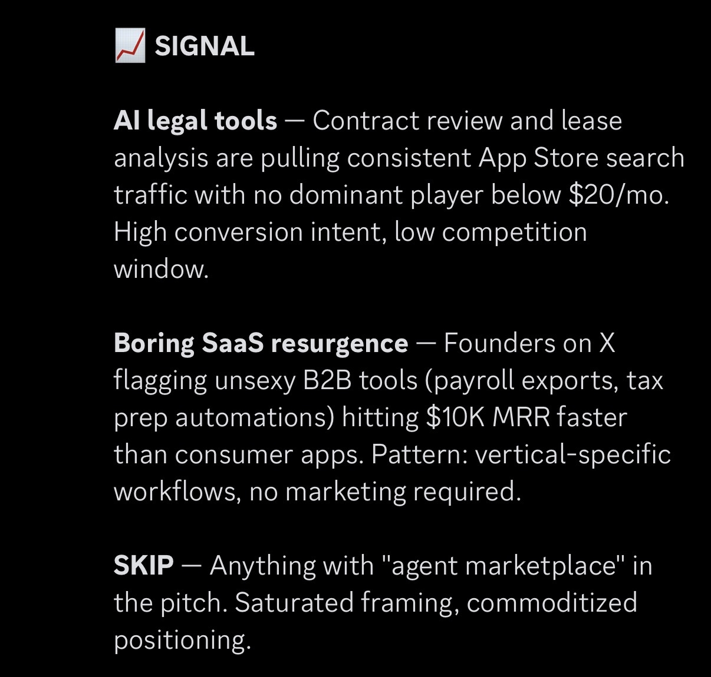
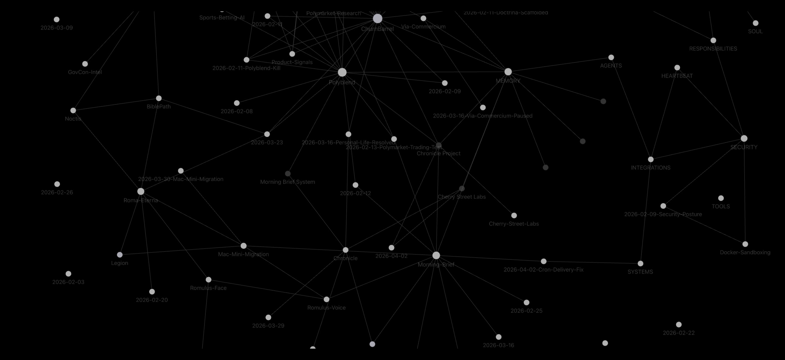

Romulus: built to ship faster, without losing the thread.
An always-on engineering system with persistent memory, multi-model routing, and a fixed workflow. Running since February 3, 2026.
The Problem
I've worked across product, design, and engineering for a decade — startups in health, web3, energy, consumer software. The recurring constraint wasn't ideas or skill. It was throughput.
Strong opportunities surface faster than one person can evaluate and build them. Most AI workflows helped with isolated tasks but didn't preserve context well enough for real product work. Sessions reset. Notes fragmented. Good ideas disappeared into chat history. I needed a system that stayed on, retained project memory, and supported the full path from signal to shipped artifact — without removing judgment from the loop.
The Setup
Romulus runs on OpenClaw and lives on a dedicated Mac mini named Roma Eterna. It's always on — running scheduled jobs, monitoring things in the background, and sending a morning brief to Discord every day at 8 AM.
Memory lives in an Obsidian vault: daily notes, project files, operating context, decisions, and lessons. Every session reads from it. Every session writes back. 83 files, 29 project notes, 31 daily logs, 11 key decisions — dating back to first boot on February 3, 2026.
Why I Built It This Way
The Workflow
Every project moves through the same four stages. The models change. The loop stays fixed.
Model Routing Philosophy
Not every task deserves the same model. I treat model selection the same way I'd treat any system design decision: match capability and cost to the job.
What This System Has Shipped
A daily history guessing game. One event per day, three chances to guess the year. Wordle-style digit feedback. 90 hand-curated puzzles spanning five centuries.
I designed the game first — share card format, difficulty calibration, no-clues Sunday mode, and the editorial voice. Then I used the system to move from spec to production quickly.
Next.js + TailwindAI contract analyzer. Upload any PDF or DOCX, get a risk report in 60 seconds. Flags bad terms, missing clauses, unfavorable language. Built on Next.js 15, Stripe, GPT-4o. Privacy-first — contracts are never stored.
The core insight came from genuine signal: contract review is expensive and slow, and most people skip it. The product addresses a real friction point that freelancers, contractors, and founders face every day.
Next.js 15 + Stripe + GPT-4oWeather for Park Slope. R train departures from Prospect Ave to Canal St in exact minutes. Product signal digest: what's worth watching, what's noise, what to skip. All three in Discord. Custom Node.js script pulling live MTA GTFS-RT protobuf feeds, NWS weather API, and a curated signal scan via Grok.
63 consecutive mornings. Zero missed. The kind of utility that makes the system feel real before breakfast.
Node.js + MTA GTFS-RT + NWS API

What Broke
The most credible part of running a system in production is what goes wrong. Here's the one worth documenting.
What happened: The morning brief shipped with stop ID R16. The feed returned plausible-looking data — 12-minute travel time from Prospect Ave to Canal St. It looked right. R16 is Times Square. We were tracking the wrong station entirely for 11 days.
Fix: Downloaded the full static GTFS dataset, cross-referenced stops.txt, found R34N (Prospect Ave northbound) and R23N (Canal St northbound). Patched the script. Correct travel time: 26 minutes.
Lesson: Plausible data isn't verified data. A number that looks reasonable is not a number that's correct. Always cross-reference against a second source before declaring anything production-ready.
The Memory Architecture
83 files. 12 core memory docs. 29 project notes. 31 daily logs. 11 key decisions. Dating back to first boot on February 3, 2026.
Every session reads from it. Every session writes back. The result: each new project starts with full context from every prior project — no re-explaining history, no rebuilding mental models from scratch. Chat history is ephemeral. Obsidian files are not.

Legion
The next layer is already designed. Legion is an orchestration system — Romulus as conductor, multiple Claude Code workers running in parallel with git worktree isolation.
Task decomposition, parallel execution, quality gates before merge, results synthesized and delivered to Discord. The goal is to move from one person building with an AI partner to something closer to a small studio.
Phase 2: Worktree isolation — each worker in its own git branch.
Phase 3: Quality gates — automated tests before merge.
Phase 4: Knowledge accumulation — past learnings prime future tasks.
"Romulus commands Legion." — Roman military structure. A disciplined coordinated force under single command.
What I'd Tell Another Builder
The model is not the product. The architecture is. Persistent memory, explicit routing, a fixed workflow, and a stable host change what's possible. Without them, you have a fast chatbot. With them, you have a system.
Articulate your tradeoffs. Why this interface, why this memory substrate, why this model for this task — the decisions are where the product engineering shows. Anyone can list the tools. Fewer people can explain why they chose them over the alternatives.
Build something you actually use every day. The morning brief is the most useful thing in this system. Not because it's impressive — because I check it every morning before I leave. That's the real test.